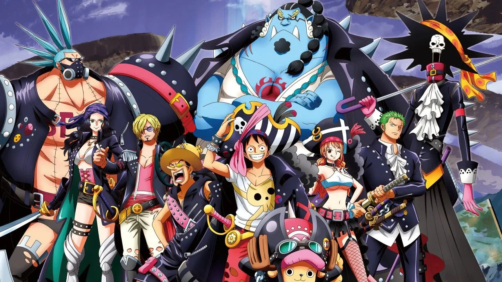
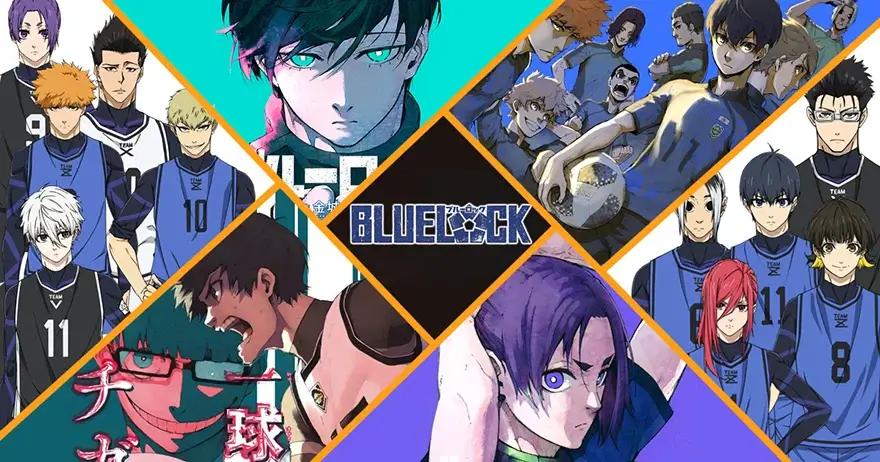

WELCOME TO MY ANIME LIST.

Haikyū!! (Japanese: ハイキュー!!) is a shōnen sports anime series based on the manga by Haruichi Furudate, and produced is by Production I.G and Toho in conjunction with Japanese television network MBS. The anime consits of four seasons, four movies, and five OVAs.

ONE PIECE is a Japanese anime television series produced by Toei Animation that premiered on Fuji TV in October 1999. It is based on Eiichiro Oda's manga series of the same name. The story follows the adventures of Monkey D. Luffy, a boy whose body gained the properties of rubber after unintentionally eating a Devil Fruit. With his crew of pirates, named the Straw Hat Pirates, Luffy explores the Grand Line in search of the world's ultimate treasure known as "One Piece" in order to become the next Pirate King.
Since its premiere in Japan, over 1000 episodes have been aired, and later exported to various countries around the world.

Attack on Titan (Japanese: 進撃の巨人, Hepburn: Shingeki no Kyojin, lit. 'The Advancing Giant') is a Japanese manga series written and illustrated by Hajime Isayama. It is set in a world where humanity is forced to live in cities surrounded by three enormous walls that protect them from gigantic man-eating humanoids referred to as Titans; the story follows Eren Yeager, who vows to exterminate the Titans after they bring about the destruction of his hometown and the death of his mother. It was serialized in Kodansha's monthly magazine Bessatsu Shōnen Magazine from September 2009 to April 2021, with its chapters collected in 34 tankōbon volumes.
An anime television series was produced by Wit Studio (seasons 1–3) and MAPPA (season 4).

Death Note (stylized in all caps) is a Japanese manga series written by Tsugumi Ohba and illustrated by Takeshi Obata. It was serialized in Shueisha's shōnen manga magazine Weekly Shōnen Jump from December 2003 to May 2006, with its chapters collected in 12 tankōbon volumes. The story follows Light Yagami, a genius who discovers a mysterious notebook: the "Death Note", which belonged to the shinigami Ryuk, and grants the user the supernatural ability to kill anyone whose name is written in its pages. The series centers around Light's subsequent attempts to use the Death Note to carry out a worldwide massacre of individuals whom he deems immoral and to create a crime-free society, using the alias of a god-like vigilante named "Kira", and the subsequent efforts of an elite Japanese police task force, led by enigmatic detective L, to apprehend him.

Hunter × Hunter is an anime television series that aired from 2011 to 2014 based on Yoshihiro Togashi's manga series Hunter × Hunter. The story begins with a young boy named Gon Freecss, who one day discovers that the father who he thought was dead, is in fact alive and well. He learns that his father, Ging, is a legendary "Hunter", an individual who has proven themselves an elite member of humanity. Despite the fact that Ging left his son with his relatives in order to pursue his own dreams, Gon becomes determined to follow in his father's footsteps, pass the rigorous "Hunter Examination", and eventually find his father to become a Hunter in his own right.

Blue Lock (Japanese: ブルーロック, Hepburn: Burū Rokku) (stylized as BLUELOCK) is a Japanese manga series written by Muneyuki Kaneshiro and illustrated by Yusuke Nomura. It has been serialized in Kodansha's Weekly Shōnen Magazine since August 2018, with its chapters collected in 22 tankōbon volumes as of December 2022.
An anime television series adaptation produced by Eight Bit premiered in October 2022.

Black Clover (Japanese: ブラッククローバー, Hepburn: Burakku Kurōbā) is a Japanese manga series written and illustrated by Yūki Tabata. It has been serialized in Shueisha's shōnen manga magazine Weekly Shōnen Jump since February 2015, with its chapters collected in 34 tankōbon volumes as of March 2023. The story follows Asta, a young boy born without any magic power. This is unknown to the world he lives in because seemingly everyone has some sort of magic power. With his fellow mages from the Black Bulls, Asta plans to become the next Wizard King.
THANK YOU
Have a Great Day.